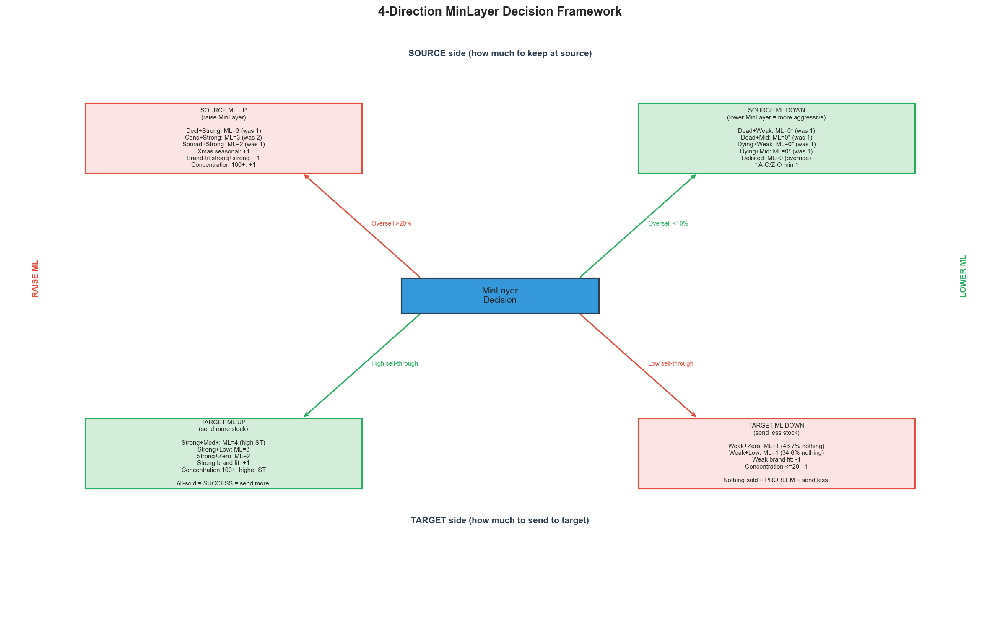
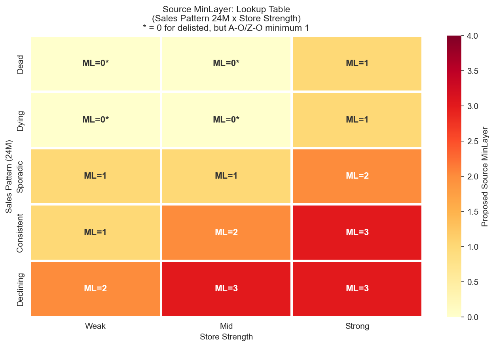
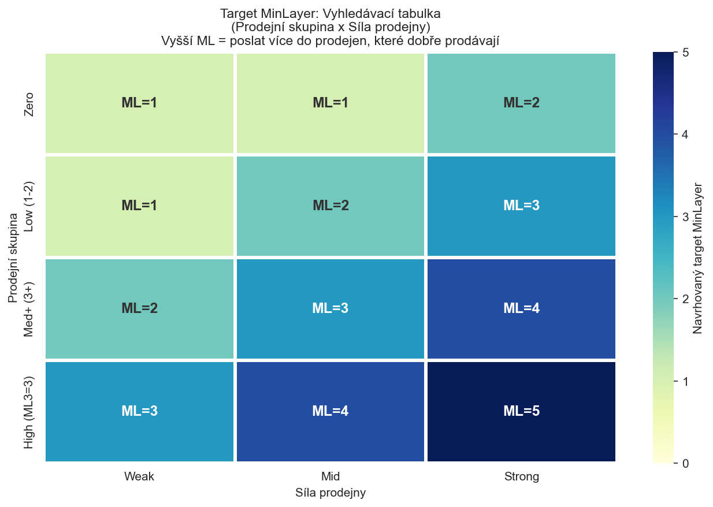

CalculationId=233 | Date: 2025-07-13 | Generated: 2026-03-22 10:47
This report defines concrete rules for MinLayer settings based on analytics from Report 1: Consolidated Findings. The tree has 4 directions: source up, source down, target up, target down.

| Direction | When | Action | Reason |
|---|---|---|---|
| SOURCE ML UP | Oversell >20% | Keep more at source | Products still selling at source, redistribution causes oversell |
| SOURCE ML DOWN | Oversell <10% | Take more from source (be more aggressive) | Products NOT selling at source, safe to take more |
| TARGET ML UP | High sell-through, high all-sold | Send more to target | Target sells everything = success, but need 1 remaining. Send more next time. |
| TARGET ML DOWN | Low sell-through, high nothing-sold | Send less to target | Target doesn't sell = wasted redistribution. Send less next time. |

| Pattern | Store | Reorder % | Oversell % | Proposed ML | Recommendation | Direction |
|---|---|---|---|---|---|---|
| Dead | Weak | 24.5% | 5.1% | 0* | CAN LOWER ML | DOWN |
| Dead | Mid | 29.5% | 7.8% | 0* | CAN LOWER ML | DOWN |
| Dead | Strong | 31.4% | 10.0% | 1 | OK | OK |
| Dying | Weak | 29.7% | 8.1% | 0* | CAN LOWER ML | DOWN |
| Dying | Mid | 35.4% | 9.7% | 0* | CAN LOWER ML | DOWN |
| Dying | Strong | 37.1% | 12.6% | 1 | OK | OK |
| Sporadic | Weak | 37.2% | 10.9% | 1 | OK | OK |
| Sporadic | Mid | 44.1% | 15.3% | 1 | OK | OK |
| Sporadic | Strong | 47.8% | 20.1% | 2 | MUST RAISE ML | UP |
| Consistent | Weak | 46.4% | 13.2% | 1 | OK | OK |
| Consistent | Mid | 56.0% | 22.7% | 2 | MUST RAISE ML | UP |
| Consistent | Strong | 56.5% | 28.0% | 3 | MUST RAISE ML | UP |
| Declining | Weak | 55.3% | 25.1% | 2 | MUST RAISE ML | UP |
| Declining | Mid | 64.7% | 28.3% | 3 | MUST RAISE ML | UP |
| Declining | Strong | 68.0% | 35.4% | 3 | MUST RAISE ML | UP |
* = 0 for delisted items, but business rule: A-O (SkuClass 9) and Z-O (SkuClass 11) minimum ML=1.
| Rule | Condition | MinLayer | Reason |
|---|---|---|---|
| Active orderable | SkuClass = A-O (9) | MIN = 1 | Active goods must stay in stock |
| Z orderable | SkuClass = Z-O (11) | MIN = 1 | Z goods still orderable |
| Delisted | SkuClass = D(3), L(4), R(5) | = 0 | Delisted - safe to take all (-29pp reorder) |
| Modifier | Condition | Adjustment | Reason (see Findings) |
|---|---|---|---|
| Xmas seasonality | Xmas share 20-60% | +1 | Sec 7: +9-11pp oversell for seasonal products |
| Brand-Store fit | Strong brand + Strong store | +1 | Sec 8: +16pp reorder gap |
| Wide distribution | Product on 100+ stores | +1 | Sec 8: +25.9pp reorder gap |
Goal: Send enough pieces so the product sells AND 1 piece remains at the store. All-sold = success but send more next time. Nothing-sold = problem, send less.

| Sales Bucket | Store | ST Total | All-sold % | Nothing % | Proposed ML | Direction |
|---|---|---|---|---|---|---|
| Zero | Weak | 0.76 | 53.7% | 43.7% | 1 | DOWN (send less) |
| Zero | Mid | 0.85 | 57.2% | 39.3% | 1 | DOWN (send less) |
| Zero | Strong | 1.18 | 66.5% | 31.8% | 2 | UP (send more) |
| Low(1-2) | Weak | 0.77 | 44.4% | 34.6% | 1 | DOWN (send less) |
| Low(1-2) | Mid | 0.88 | 48.6% | 28.8% | 2 | OK |
| Low(1-2) | Strong | 1.09 | 57.1% | 22.3% | 3 | OK |
| Med+(3+) | Weak | 1.42 | 67.2% | 12.6% | 2 | UP (send more) |
| Med+(3+) | Mid | 1.57 | 69.3% | 12.5% | 3 | UP (send more) |
| Med+(3+) | Strong | 1.83 | 74.7% | 9.0% | 4 | UP (send more) |
| High (ML3=3) | Weak | >1.5 | >75% | <5% | 3 | UP (send more) |
| High (ML3=3) | Mid | >1.5 | >75% | <5% | 4 | UP (send more) |
| High (ML3=3) | Strong | >1.5 | >75% | <5% | 5 | UP (send more) |
| Category | Sell-through | Color | Action |
|---|---|---|---|
| Nothing sold (0%) | 0% | RED (problem) | ML DOWN - don't send to this store/product |
| Low ST (<30% at 4M) | <30% | YELLOW (warning) | ML DOWN - sells too slowly |
| Medium ST (30-80%) | 30-80% | Neutral | ML OK - reasonable sell-through |
| High ST (80-99%) | 80-99% | GREEN | ML OK/UP - selling well, 1+ remains |
| All sold (100%+) | 100%+ | GREEN (success!) | ML UP - everything sold, send more next time |
| Modifier | Condition | Adjustment | Reason |
|---|---|---|---|
| Brand-Store fit strong | Strong brand + Strong store | +1 to target ML | 65.7% all-sold, high sell-through |
| Brand-Store fit weak | Weak brand + Weak store | -1 to target ML | 30.7% nothing-sold |
| Wide distribution | Product on 100+ stores | +1 | 63.2% all-sold vs 45.7% |
| Niche product | Product on <=20 stores | -1 | 38.6% nothing-sold |
FUNCTION CalculateSourceMinLayer(sku, store):
-- 1. Delisting override
IF sku.SkuClass IN (3, 4, 5): -- D, L, R
RETURN 0
-- 2. Classify sales pattern (24M)
pattern = ClassifySalesPattern24M(sku, store)
-- Dead: 0 sales in 24M
-- Dying: sales only in older periods, nothing recent
-- Sporadic: irregular sales, not in every period
-- Consistent: sales in 3-4 of 4 periods
-- Declining: B > C > D (each period lower)
-- 3. Classify store strength
strength = ClassifyStoreStrength(store.Decile)
-- Weak: decile 1-3, Mid: 4-7, Strong: 8-10
-- 4. Lookup base MinLayer (UPDATED with 0* cells)
base = SOURCE_LOOKUP[pattern][strength]
-- Weak Mid Strong
-- Dead: 0* 0* 1
-- Dying: 0* 0* 1
-- Sporad: 1 1 2
-- Cons: 1 2 3
-- Decl: 2 3 3
-- 5. Business rules (A-O/Z-O minimum 1)
IF sku.SkuClass IN (9, 11): -- A-O, Z-O
base = MAX(base, 1)
-- 6. Modifiers (SOURCE UP reasons)
IF sku.XmasShare BETWEEN 0.20 AND 0.60:
base = base + 1
IF BrandStoreFit(sku, store) == 'Strong+Strong':
base = base + 1
IF sku.StoreCount > 100:
base = base + 1
RETURN MIN(base, 5)
FUNCTION CalculateTargetMinLayer(sku, store):
-- 1. Classify sales bucket
bucket = ClassifySalesBucket(sku, store)
-- Zero: 0 sales 6M
-- Low: 1-2 sales 6M
-- Med+: 3+ sales 6M
-- High: current ML3 = 3
-- 2. Classify store strength
strength = ClassifyStoreStrength(store.Decile)
-- 3. Lookup base MinLayer
base = TARGET_LOOKUP[bucket][strength]
-- Weak Mid Strong
-- Zero: 1 1 2
-- Low(1-2): 1 2 3
-- Med+(3+): 2 3 4
-- High(ML3=3):3 4 5
-- 4. Modifiers (TARGET UP / TARGET DOWN)
IF BrandStoreFit(sku, store) == 'Strong+Strong':
base = base + 1 -- TARGET UP
IF BrandStoreFit(sku, store) == 'Weak+Weak':
base = base - 1 -- TARGET DOWN
IF sku.StoreCount > 100:
base = base + 1 -- TARGET UP (wide distribution)
IF sku.StoreCount <= 20:
base = MAX(base - 1, 1) -- TARGET DOWN (niche product)
RETURN CLAMP(base, 1, 5) -- min 1 (A-O/Z-O rule), max 5
Generated: 2026-03-22 10:47 | CalculationId=233 | EntityListId=3 | See Report 3: Backtest for impact of proposed rules.